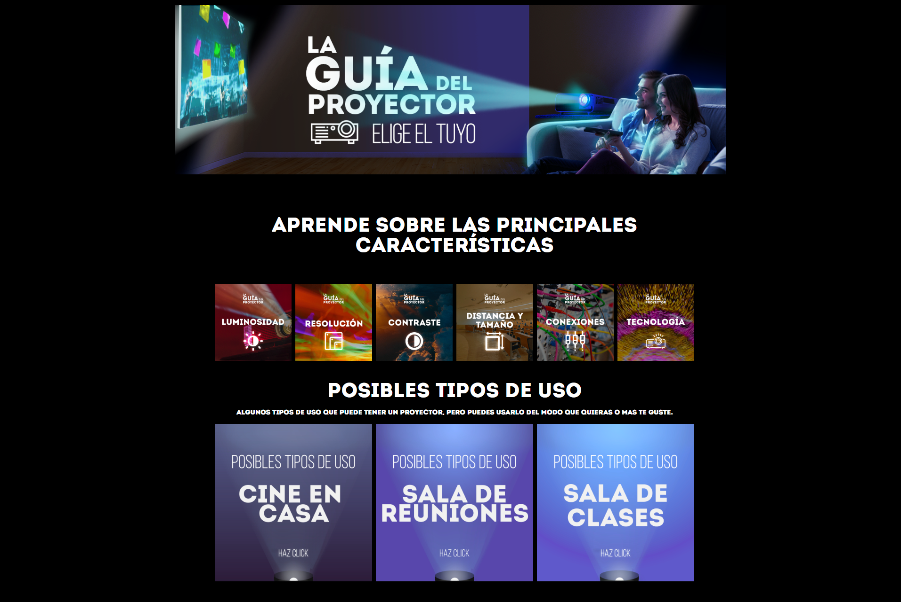

La Guía del Proyector
La solicitud fue desarrollar un mini sitio educativo explicando los diferentes tipos de proyectores y caracteristicas para que los clientes pudieran comprar el que mejor se adapte a sus necesidades
La propuesta fue hacer las vistas lo más interactivas posibles